Custom simracingpedalen
Custom load-cell rempedalen voor simracing ontworpen en gebouwd. Het volledige traject gedaan: CAD-modellering, 3D-printen, Arduino-elektronica, sensorkalibratie en eigen firmware.
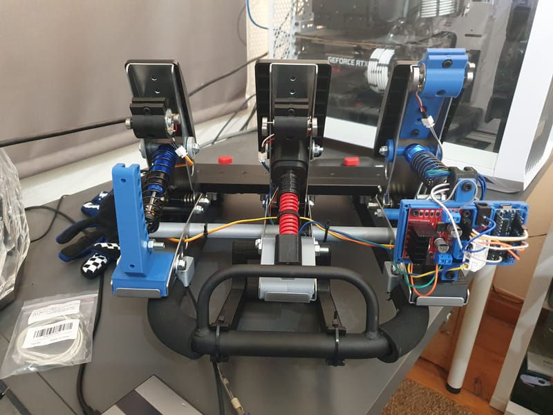
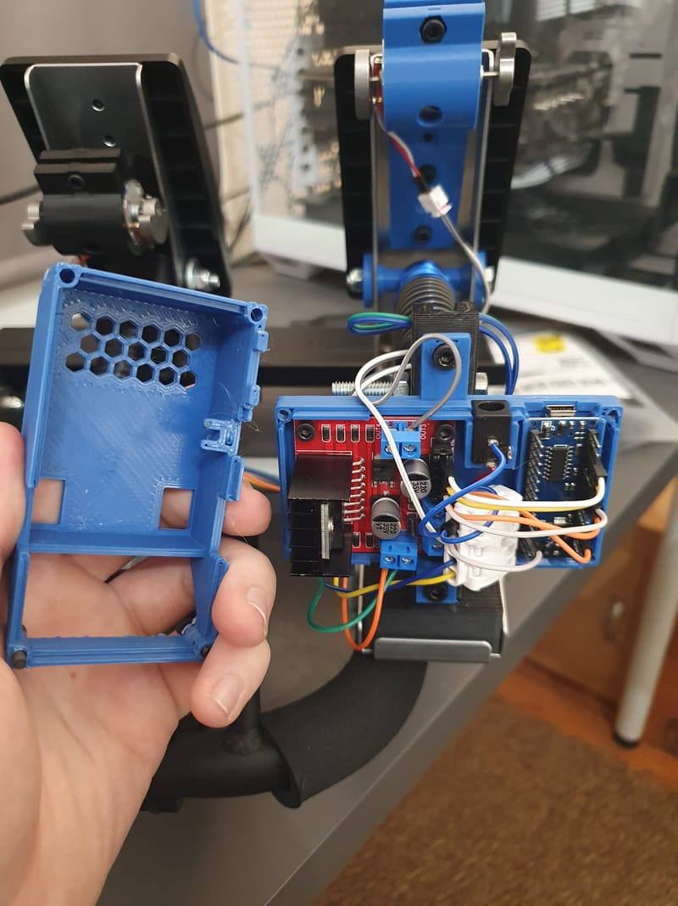
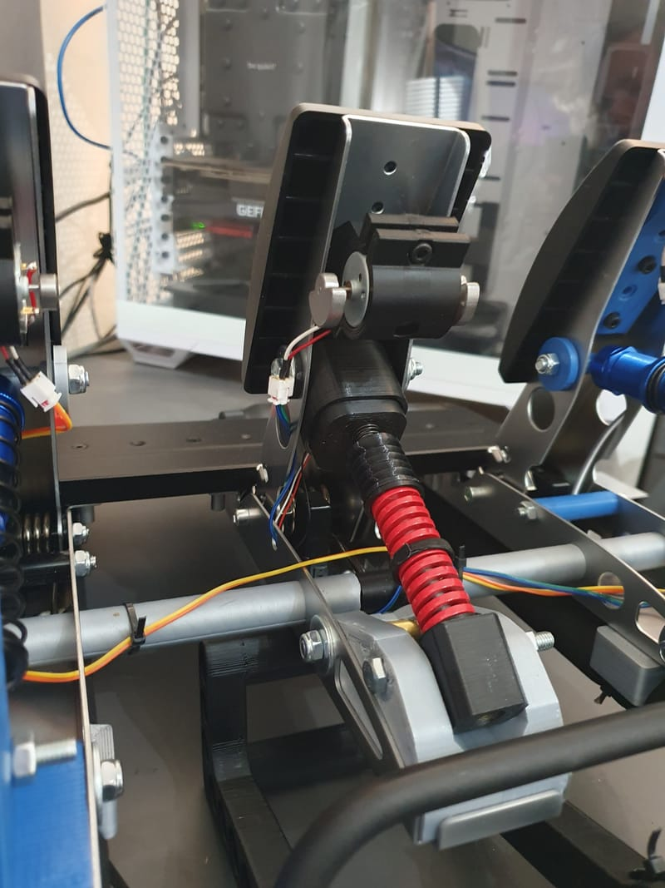
Ik ben Florian, een Nederlandse maker en systeembeheerder die momenteel Bedrijfskunde studeert aan de Rijksuniversiteit Groningen.
Ik werk graag op het snijvlak van digitaal en fysiek maken. Of het nu gaat om custom simracingpedalen ontwerpen en 3D-printen met Arduino-gebaseerde load cells, self-hosted serverinfrastructuur beheren, of bouwen met hout en metaal: ik haal energie uit ideeen omzetten in werkende realiteit.
Met praktische ervaring in 3D-printen, CAD-ontwerp, elektronica, systeembeheer en bedrijfsvoering breng ik een nuchtere mix van technische vaardigheid, eigenaarschap en probleemoplossend vermogen mee.
Ik ben Nederlands en spreek Nederlands, Duits en Engels. Ik heb in Duitsland gewoond en in Nederland gestudeerd.
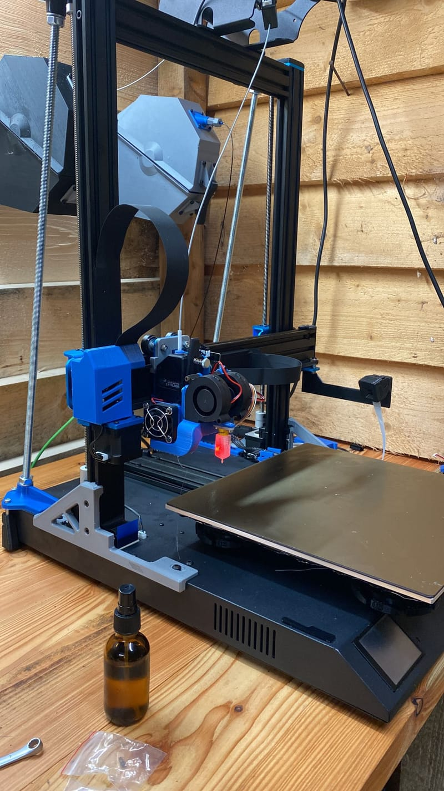
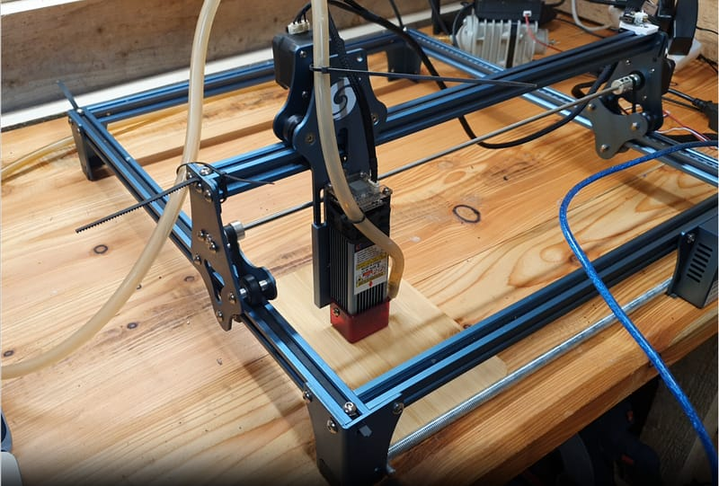
Custom load-cell rempedalen voor simracing ontworpen en gebouwd. Het volledige traject gedaan: CAD-modellering, 3D-printen, Arduino-elektronica, sensorkalibratie en eigen firmware.



Serverinfrastructuur op twee locaties gebouwd en onderhouden met Proxmox-virtualisatie, Docker-services, backups en monitoring. Self-hosted media, development, surveillance, persoonlijke webapplicaties en een huis dat draait op Home Assistant.
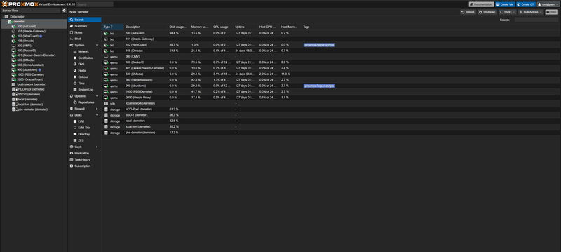
Frigate NVR met YOLOv5 AI-objectdetectie opgezet voor real-time beveiligingsmonitoring. Een multi-camera setup gebouwd met slimme meldingen, event recording en netwerkopslag binnen het homelab.
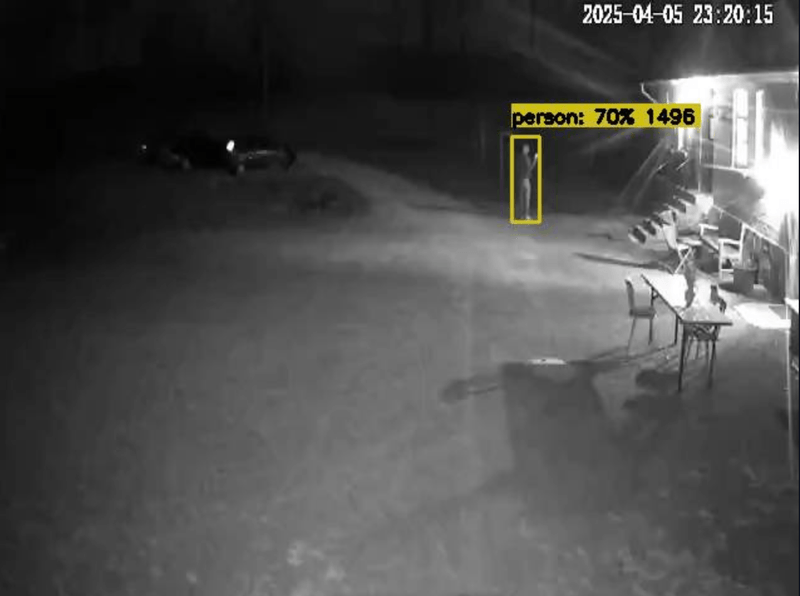
Een draagbare demonstratiekit ontwikkeld voor bGrid's indoor positioning en smart building technology. Custom CAD-prototypes gemaakt met lasersnijden en 3D-printen, zodat stakeholders het concept direct konden vasthouden en testen.
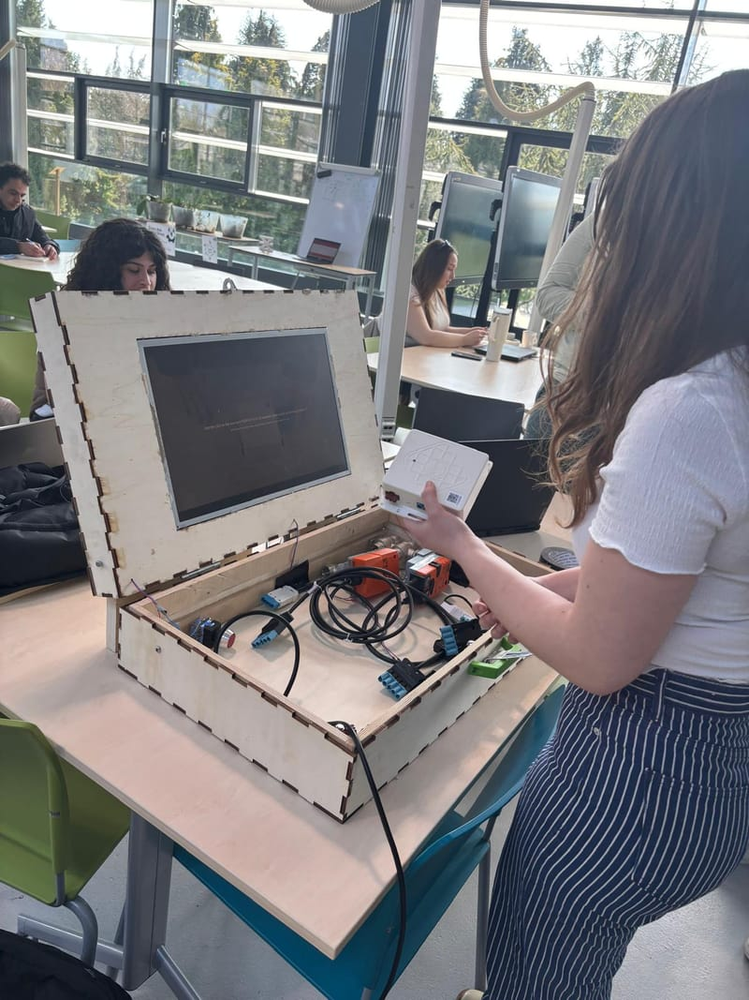
Een interactief plantenbewateringsprototype gebouwd dat reageerde op elektronisch gemeten stressniveaus van de gebruiker. Arduino-sensoren, eigen code, 3D-geprinte behuizingen en fysieke prototyping gecombineerd tot een speels geautomatiseerd systeem.
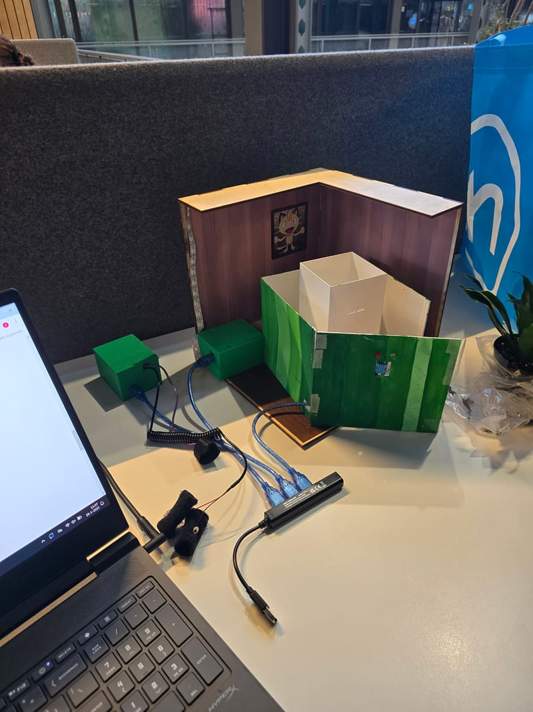
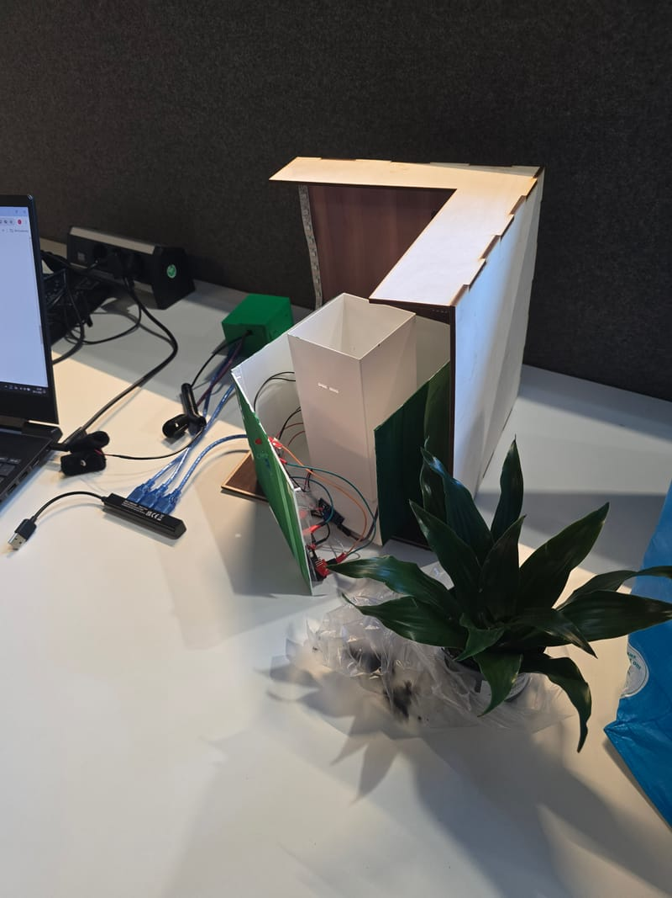
Houtbewerkings- en constructieprojecten uitgevoerd, van custom meubels tot grotere structurele builds. Planning, materiaalkeuze, werkplaatsinrichting en hands-on fabricage gecombineerd met aandacht voor afwerking en duurzaamheid.
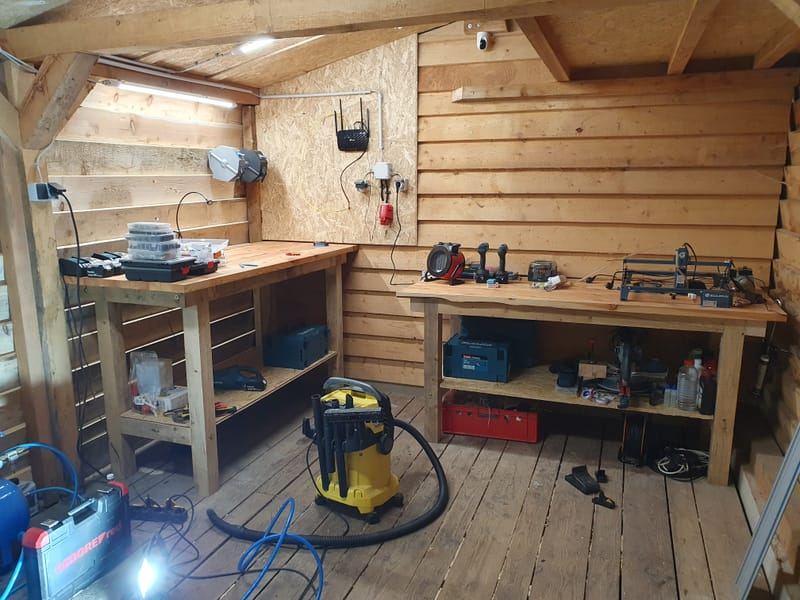
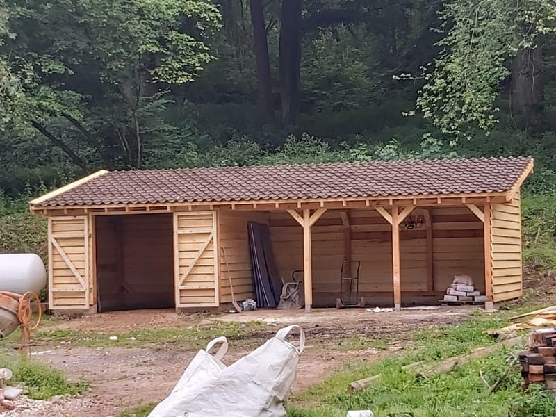
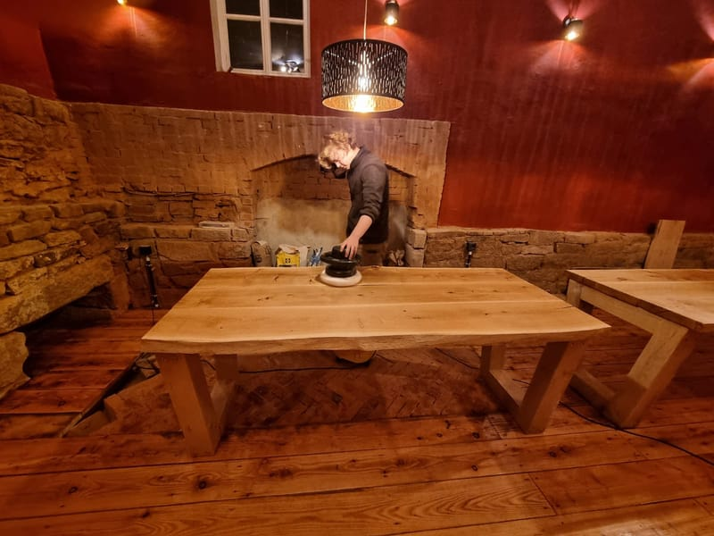
Interesse in praktisch technisch werk, een hands-on project of een gesprek over een stage? Ik sta open voor kansen waar bouwen, bedrijfsvoering en probleemoplossing samenkomen.